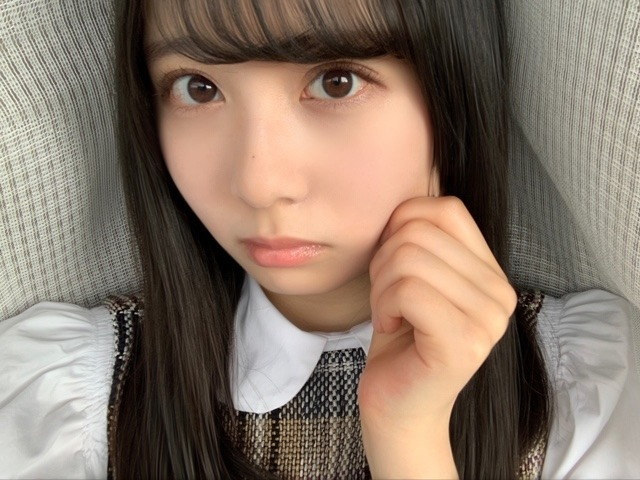
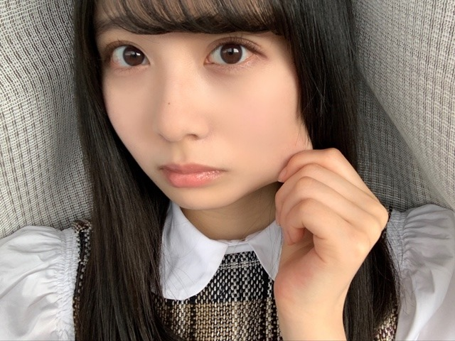
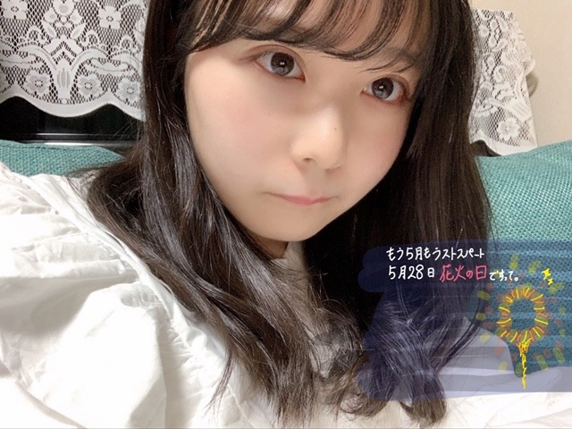
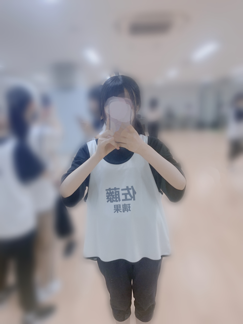
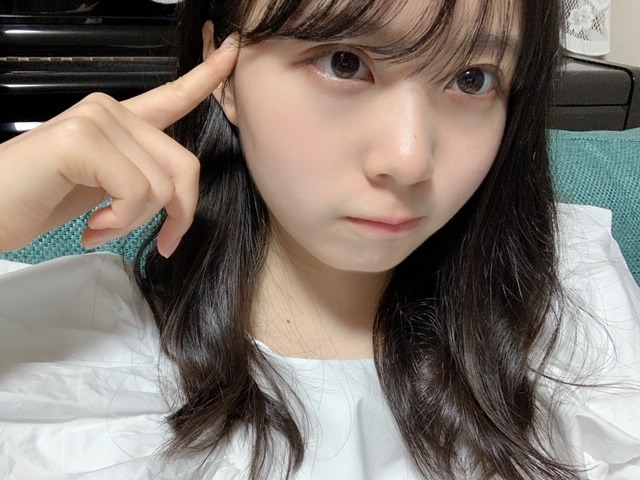

2020/0528Thu白いゼッケン。佐藤璃果
こんにちは～︎︎︎︎︎☺︎
今日は５月28日木曜日。
ブログを開いて下さり、
ありがとうございます。
暑い日が続いておりますが、
いかがお過ごしでしょうか？
お元気ですか？
私はまだ夏本番ではないというのに、
水の消費量がさらに増え、
自分の夏場の水の消費量に震えております。
にこにこくろみんからバトンを頂きました。
乃木坂46 新4期生 岩手県出身
佐藤 璃果(さとう りか)です。

(全力でやったらもっとほっぺた伸びますが、控えめに佐藤。)

(さっきより伸びた。実はまだ伸びるよ。)
前回のブログでの皆さんへの質問。
沢山のオススメの曲、コメント
ありがとうございます☺︎
乃木坂46時間TVについてのおはなし、
皆さんの事、MVについての事、
沢山、ありがとうございます❤︎
そして、
色んな曲と出会わせて頂きました！⸜( ॑꒳ ॑ )⸝
今まだ400コメントすぎあたりの曲を
追加してる途中なんですが、
なんと『みんなのオススメ』プレイリスト
には342曲もの曲が追加されています。
追加するのは大変ですが、
皆さんの事をより知れる気がするので
頑張っております~
(これから書きたい！と思った方は前のブログに出来れば少なめでお願いします(小声))
特に秀でているものや特技がないから
皆さんとの共通の話題が増えたら嬉しいな~って思ってます。

(5月28日。私、風景画は書けるみたいです！動物や人は。。。)
最近の私出来事。~~~~~~~~~~~~~~~~~~
友人と深夜に電話を久しぶりに
することになりまして...。
寂しくて寂しくて、久しぶりで、
なんだか嬉しくて30秒ぐらいずっと
笑っていました。
えへへえへへえへへって
やばいですよね。
嬉しさが溢れてえへへという
言葉に変わり、止まらなくなりました。
*****************************************
｢世界中の隣人よ｣
MVが5月25日に公開されました。
心に染みてとても温かくて、ほっとする
こんなにも素敵な楽曲に、
ありがたいことに私も参加させて
頂きました。
世の中のみんな、誰かが誰かの隣人で、
誰かが誰かの大事な人である事を
忘れず、優しい気持ちで生きて
行けたらいいなと思います。
誰かのために、世界のために
働いてくださっている方への感謝を
より一層強く持ちたいです。
いつもありがとうございます。
神宮球場が徐々に映されていって、
紫のサイリウムでいっぱい
になるシーンが特に、胸が熱くなりました。
沢山聞きたいと思います。
*****************************************
今日は研修生の時のお話を
させて頂きたいと思います。
私の中でとても大事な記憶です。
研修生時代のことを知らなかった人も
研修生ツアーに来て下さった方も、
知っていただけたら、と思います。
*****************************************
昨年の夏頃、振り入れが始まりました。
でも、最初の方、私はテストがあり、
参加できませんでした。
テスト期間だったのに、
みんなより遅れてしまっていることが
不安で、テスト勉強に集中できない
日々を送っていました。
(テスト期間なのに、皆のダンス練習動画
を見てしまっていた... やーいばかばか)
最初の方に居なかったことで
私以外の14人の中での絆が
深まっていそうで、
人間関係を築くことが苦手な私は、
毎日不安だった事をよく覚えています。
そんな中、
｢待ってる！｣や｢小さなことでも聞いてね｣
など温かい言葉を送ってくれる子もいて、
その度に心がじーんとしていました。
いち早く歌割りの紙を
送ってくれる子もいました( .. )
そのお陰で、新幹線で歌割りを見ながら
東京へ向かうことが出来ました。
みんなレッスンで疲れていたり、
いっぱいいっぱいだったりするのに...。
温かいですよね本当に...感謝です。
そんなこんなでテストが終わり、
私も夏のレッスンに参加しました。
個別で何度も丁寧に、
焦らなくても大丈夫だよ、
と、教えてくださったダンサーの皆様
にも感謝の気持ちでいっぱいです。
マネージャーさんにも沢山の
温かい言葉を貰いました。
ありがとうございました。
毎日みんな必死でした。
思い出すだけで、あの時の
夏の匂いが蘇ってきます。
毎日レッスンさせて頂けるのは
乃木坂46さん欅坂46さん日向坂46さん、
沢山の先輩方の今までの努力が
あったからこそで、恵まれた環境でした。
ありがとうございました。
これからも沢山の方への感謝の気持ちを
忘れずに行きたいです( ੭ ˙˙ )੭
そして、
ビブスという物が貰えた時、
初めて坂道研修生という存在がそこに
あるということを実感出来ました。
紙やガムテープに名前を
書いていたことも懐かしいです。
明日から自分の名を書かなくてもいいんだ~
と嬉しい気持ちもありましたが、
少々寂しかったです。。
最後の自分で書いた名前を、
交換しあっている子もいて
微笑ましかったです。
そして、｢白｣。白です。
ビブスの色が白だったんです。
そこにも感動していました。
これから何色になるか分からない。
未知の可能性を秘めている気がして、
嬉しかったです。
白という色も素敵だなと思えた日でした。

(佐藤璃果 )
えええええええええ
レッスンの事だけでこんなに
長くなってしまった...。
ツアーの事は、また書きます。
*****************************************
長いから少しだけ
~~~質問~~~
〇好きなバンドはPEDROさん、
back numberさん、sumikaさん、Official髭男dismさんと言っていましたが、その4組の好きな曲はなんですか？教えてほしいです！
みんなが好きな曲教えてくれたので、
私も！
前のブログにも書いたんですが...！
重複ですみません。
❁PEDROさん
｢感傷謳歌｣ ｢GALILEO｣｢自律神経出張中｣
｢うた｣ ｢甘くないトーキョー｣
❁backnumberさん
｢ヒロイン｣と、｢クリスマスソング｣、｢花束｣
❁sumikaさん
｢Amber｣、｢ホワイトマーチ｣ 、
｢フィクション｣、｢センス・オブ・ワンダー｣
｢ファンファーレ｣
❁Official髭男dismさん
｢パラボラ｣、｢115万キロのフィルム｣、
｢異端なスター｣、｢I LOVE...｣
バンド以外のアーティストさんや
アイドルの方の曲もよく聴きます。
よく質問を頂く、
乃木坂46さんの中での好きな曲を
いつも書こうとするんですが、多すぎて...。
よし！次までにまとめよう。
7曲ぐらいに絞れたらいいな。
次は質問たくさん答えますね( ´﹀` )
少なくてごめんなさい~。
*****************************************
明日はるなぴです。
"美味しかったよ、ありがとう☺︎☺︎"
と直筆メッセージが回ってきました。
みんな食べ物が大好きなのですね！！
私も1つ☺︎を付け足し、
最近暑いので、小型扇風機も
バトンにしたいと思います。
るなぴに個人的メッセージで
お勉強お疲れ様！も付けます！
*****************************************
私もレポート頑張らねば~~。
皆さんもお勉強、お仕事、人生、
お疲れ様です。
皆さん、沢山頑張っているようですね（ ; ; ）
大変よく頑張っていますで賞。
皆さんにとって今日が
素敵な一日になりますように。

(巻いたけどすぐ巻き取れちゃう人です~
前髪がいつもと違う感じ(੭ ᐕ)) ？)
またね。
#7 ✩* り か ✩*

PROFILE
新4期生リレー
202104
| SUN | MON | TUE | WED | THU | FRI | SAT |
|---|---|---|---|---|---|---|
| 1 | 2 | 3 | ||||
| 4 | 5 | 6 | 7 | 8 | 9 | 10 |
| 11 | 12 | 13 | 14 | 15 | 16 | 17 |
| 18 | 19 | 20 | 21 | 22 | 23 | 24 |
| 25 | 26 | 27 | 28 | 29 | 30 | |

コメント(513)
『世界中の隣人よ』MVみました！
卒業メンバーもでていてすごく感動しました！毎日きいてます！
質問コーナー
○乃木坂のMVの中で一番好きなのはなに？
○今までで1番嬉しかった誕生日プレゼントはなに？
○嫌なことがあった時はなにをして気持ちを切り替えていますか？
そういえば僕の好きな曲は髭男の『イエスタデイ』と乃木坂の『今、話したい誰かがいる』です！
5月もたくさんの幸せをありがとうございました！
6月もよろしくお願いします笑
ゆっちゃんより。
毎回かわいい写真最高すぎです！
課題の提出期限が数時間に迫ってるので終わったらまたコメントします！！
れい
研修生時代のこととか貴重なこと教えてくれて
ありがとう！
努力は必ず報われるのですね〜
璃果ちゃんのこのブログで改めて教わった
気がします〜
本当に更新ありがとう！
世界中の隣人よは本当に素敵な曲ですよね。
外出自粛と不安で溜まったストレスも、この曲を聞くとみんな一緒に頑張っているんだなって思いになって、また頑張れる気がしてきます。
曲の歌詞も素敵で毎日、この曲を聞いて、歌詞と歌声で元気をもらっています。
今はライブが延期されたり、握手会もないから、会えないんですけども、こうなったからこそ、りかちゃんが卒業した先輩たちと同じ曲に参加するのを見れると思うと、やはり悪いことばかりじゃないんだなって思えてきました。
研修生の時の話もとてもよかったです。最初はみんなに遅れてレッスンを受けたけど、それでも頑張って不安な日々を乗り越えて、今乃木坂46のメンバーになったのを見ると今の私の不安がとんでも小さく見えます。ありがとう。
最近仕事で新しい挑戦をすることになったんで、今度エールをくれると嬉しいです。
じゃ、また5日後に
ぱと◢璃果坂より
初めて質問します、璃果ちゃんはボカロは好きですか？
さぁちゃんが好きなのでもしかしたら好きなのかなと思って！
僕は初音さんの千本桜が好きです！
これからもブログ楽しみにしてます(^^)
今日も更新お疲れ様でした！ありがとう！今日は休みなので少し早起きして朝からずっと待ってました！笑
璃果ちゃんのブログが5日に1回読めるので生きてられます！(重い)ありがとう^ ^
坂道研修生時代懐かしい！！
乃木坂の璃果ちゃんも好きだよー！！
可愛すぎて可愛すぎて震えてます。
ちょっと興奮が収まったらコメントします。
失礼しました(｀･ω･´)ゞ
握手会いきたいです
私の住む地域も暑い人寒い日交互に
来てますが風邪引かずに頑張っております(笑)
白色のビブスについても白って確かに
そうだよなぁと改めて考えました〜
白って本当に未知の可能性ですよね〜
今回も本当にブログ更新ありがとね！
back numberの「クリスマスソング」めっちゃ好きっ！！
時期になるとすごーく聴きたくなるもん。
（意外とほほ伸びるのね）
質問 理科の中で得意な科目ってありますか？(化学、生物など)
私は今年に入ってから乃木坂を好きになったので研修生のことは何にも知りませんでしたが、
少しわかることができて嬉しかったです！
りっちゃん！
やっほー！
ひろき(Yandji)です☺️
ブログ更新ありがとー！！！
質問タイムー！！！
やる気にならない時に、どーやってやる気出してる？
また、コメントするね！
では、またねー！
ひろき(Yandji)より
研修生時代の思い出語ってくれてありがとう！
凄い努力してきたって事が伝わって来た！これからはファンの
一人として、璃果ちゃんを応援していくね！
back numberで好きな曲は
わたがしって曲だよ！是非聴いてみてね、←知ってるかな、？
白ってシンプルだけど、一番合わせやすくて良い色だよね！
シンプルイズザベスト笑
じゃあまた明日！いつもありがとう
6回目のリレーブログ、更新ありがとうございます！
璃果ちゃんのブログを読むことが、5日間の生きがいとなってきました笑
世界中の隣人よ。璃果ちゃんが歌っている姿、しっかりと見納めました
素敵な歌詞と音が、乃木坂46の想いが世界に伝わって欲しいですね。
璃果ちゃんが真っ白なビブスにどんな色をつけて行くのか楽しみにしていますね
いつか璃果ちゃん色に染まったビブスを見せて欲しいな笑
気が緩みがちな毎日が続きますが、まだまだ気を引き締めて頑張って生きましょうね。
早くお会い出来ることを祈って。
それではまた。
ほっぺ柔らかいね！（笑）
巻き髪りかちゃんほんとにかわいい！
見たいって言ってたから嬉しい♡
MVも見たよー胸熱だった(T_T)
レッスンの話とかりかちゃんの話を聞くたびにりかちゃんのこと好きだなーってなる(T_T)(T_T)
早く会いたいなー！
5日後の更新楽しみにしてるね⸜( •ᴗ• )⸝またね！だいすき！
璃果ちゃんへお願いがあります！
学校頑張るためにパワーください！！
まなちゃんって呼んでくれると嬉しいです！
あと、私のおすすめの曲は日向坂の君のため何ができるだろうです！
あとみくにちゃんとのツーショ欲しいな！！
要望多くてごめんね！
まなより
ほっぺ柔らかいねっ！
自分もやってみたらドブでした(笑）
テストと振り入れが重なってとても不安
だったかもしれませんが、絶対に良い形で
返ってくるって自分は信じてるので
自分も支えてくれた方には常に感謝しないと
ってこのブログ通して気づきました
貴重な話ありがとう！
次回もよろしくねっ！
研修生ツアーほんとに良かったよ〜
乃木坂で活躍する璃果ちゃんが楽しみだあ
「世界中の隣人よ」早速ヘビーローテーションしてるよ～笑笑
ファン思いな所が乃木坂46の良さの1つ。こういう時に出来ることは何だろう…？って考えたときに、「日本中、いや世界中に笑顔を届ける！」って言う乃木坂46のメッセージがこの歌に歌われている
ますます応援していきたい！と思ったよ♪
研修生のあの激動の夏からもうすぐ１年か～
あっという間！だけど本当に色んなことを経験したと思うよ
さあ今年は「乃木坂46 4期生」としてのデビューの１年！
全力でがんばるりかちゃんを全力で応援します！
最後に( ・ω・)∩ｼﾂﾓｰﾝ！
◎寝る前にいつも行っているルーティーンは？
次も楽しみにしてるよ！
ほっぺ引っ張ってるの可愛いね
世界中の隣人よいい曲だよね。
めっちゃ聴いてる。
レポートたいへんだよねぇ〜
僕も課題沢山出されちゃってたいへん
髪巻いてるの可愛いね
確かに暑いですね
もう半袖着ちゃってます
「世界中の隣人よ」見ましたよ！
MVも新しいのに懐かしく、いろいろと感慨深かったです
歌詞も元気を貰える内容で背中を押してくれます
この曲もプレイリスト入りしますかね？
あと、PEDROさん聞いたことなかったので聞いてみますね
またの更新楽しみにしています
ブログ更新ありがとう〜(人୨୧ᵕ̤ᴗᵕ̤)
୨୧┈┈┈┈┈┈┈┈┈┈┈┈୨୧ ▷◁.｡
かわいい〜❤︎
天璃もよく前髪のカールはすぐ取れるからすごく分かる〜
気づいたら片想い、やさしさとは、
ごめんねずっと。。僕たちがいる場所
がすき！
私も今絵を描くの頑張ってる！りかちゃんの風景画うまい！花火の日知らなかった！
りかちゃんの髪巻いてるの似合ってます！前髪も変わって大人な感じ～!またいつもと違う雰囲気のりかちゃん見たいです!
あの、りかちゃんの好きなアニメとかありますか？私アニメが美術部なのによく知らなくて、、なので､何かオススメ教えてくれると嬉しいです♪
またブログ更新楽しみにしています！体に気を付けてください
質問ですが！ー岩手の特に知って欲しい名産とかありますか？教えてください！
研修生のみんなは本当に優しい人ばっかなんだね！
たしか、『悲しみの忘れ方』『君の名は希望』『光合成希望』とか好きだったっけ？笑
次のブログも楽しみにしてるねー！
確かに久しぶりに友達と電話すると なんか嬉しいよね。笑
りかちゃんも勉強やレッスンお疲れ様です！
アイドル街道突っ走って
毎日頑張っているりかちゃんを素直に尊敬します！
いちファンとして早くりかちゃんがステージでキラキラ輝いている姿を早く見たいです
それと僕の周りの友達もりかちゃんファンがめっちゃ増えています！
僕としてもめっちゃ嬉しいです。笑
ブログも毎回楽しみにしております
最後に質問です！
りかちゃんの思うアイドルの理想像とは 何ですか？
ちょっと難しい質問かな、、笑
ではまた！！、
ベッツィー&クリス
♪ 「 白い色は 恋人の色 」
生でぷにぷにほっぺを見てみたいです(⸝⸝o̴̶̷᷄ ·̭ o̴̶̷̥᷅⸝⸝)
暑くなってきたねー
乃木坂愛も暑くなるよ
研修生としての最初はそんなことがあったんだね
グループは違うけど、坂道研修生っていう肩書きは無くならないから、良い仲間をもてて良かったね！
やっぱりそれもそれで璃果ちゃんの良いところでもある！
そーいえば好きな曲！
Symphony CleanBanditさん
これ聴いてみて〜
☆質問☆
46時間TV、46時間寝ない？
次回も楽しみに待ってるね！
暑くなってきたねー
乃木坂愛も暑くなるよ
伸びる璃果ちゃんも頭と前髪が違う璃果ちゃんもビブスもかわいいです大好きです！電話で誰かと話すとなんか不意に笑っちゃうことあるよねめっちゃわかる。あとその時間最高に楽しいよね笑
白いビブスって確かにあんまり見ないけどこう見るとなんかこみ上げてくるものがある感じするし何色にもなれるって確かに素敵な色って感じがすごくいい！
まだまだ季節的に大変やと思うけどお互い頑張りましょう！大学のレポートも璃果ちゃんのブログをモチベーションにして頑張ります！また待ってます！
質問: 璃果ちゃんが見てきた中で1番好きな景色って何ですか？
よければお教えください！
最初の２枚の写真、ツイード風のチェックが素敵。
三つ編み可愛すぎて命がいくつあっても足りないですよ…
ヒーターの偉大さを知るのは北国の人間が特にわかると共感できますよ！！
次は首からスマホをぶら下げてる写真期待します
駅の間隔が長いのと電車の本数が少ないのは田舎あるあるだよね！！！僕の実家の最寄りも南行きはわりと近いけど北行きは徒歩何時間かかるんだよ！っていうくらいには遠いんだよ〜(∵`)
新曲MV見たよ！一期生、二期生、三期生、四期生、そして偉大なOGで作り上げたMV何度見ても涙止まりません。言葉と存在と行動欠かせない事です。まだ終わりは見えないこの戦いに光が見えた気がします。
コロナがもう少し落ち着いたら僕も璃果ちゃんもお互い岩手に帰れる時がくるよ！今踏ん張り時だ！目指せ岩手県コロナゼロ！！＼＼\\٩( 'ω' )و //／／！！
ー質問ー
・とは言ったものの岩手県って何でコロナに強いのかな？笑免疫力の問題？それとも人口密度の問題かな？((((；ﾟДﾟ)))))))
・璃果ちゃん的岩手のおすすめのお土産なんでしょう！ちなみに僕はかもめの玉子です
・璃果ちゃんから見てカッコいい部活って何かな？
・都会きて岩手とのギャップで一番驚いた事は？
写真がどれも可愛すぎます。ギャラリーがりかちゃんでどんどん潤っていきます笑
研修生の時の思い出とかを話してくれるのはこちらとしても嬉しいし知らない面をどんどん知れて嬉しいです。これからもぜひ思い出話をブログだったり握手会だったりで教えて欲しいな♪(語尾注目)
またもいくつか質問しようかな
〇どうして乃木坂に入ろうと思ったんですか？
〇乃木坂になってなかったら何になってたと思いますか？
〇研修生時代で印象に残ってる出来事はなんですか？
〇尊敬するアイドルとかはいたりするんですか？
ここら辺にしときます！
もはやバトンの情報量が異常すぎて何が何だかわからなくなってます笑
あと、巻いてるのめちゃ好きです大人っぽい(´ཫ`* )
ではでは アディオス！！
じんたろ。
プレイリストの曲めっちゃ聴くね！！
今日(5月28日)誕生日でした。
この日に璃果ちゃんのブログがまわって来た
ことは、凄い奇跡だと思います。
同じ岩手出身なので、応援しています。
PEDROと髭団はあまり詳しくなかったんで、璃果ちゃんオススメの曲聴いてみようと思います！（前回のブログのコメントに僕のお勧め曲コメントしたのでぜひ聴いてみてください）
あと、巻いてる髪型めっちゃ可愛い
璃果ちゃんもレポート大変なんですね〜
自分も大学院の授業と研究のレポート大変なんでお互い頑張りましょう！
久しぶりに電話するとなかなか話すことがいっぱいで楽しくなっちゃうよね笑笑僕も昨日ずっと友達と3時間話してたよ笑
研修生ツアーの裏側ってそんな感じやったんやねぇ。すごい感慨深い（いや語彙力なさすぎ笑）
短めだけど今日はありがとね！5日後も楽しみにしてます！
コメントする